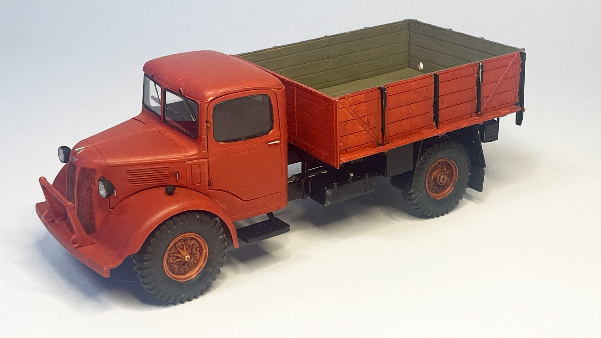
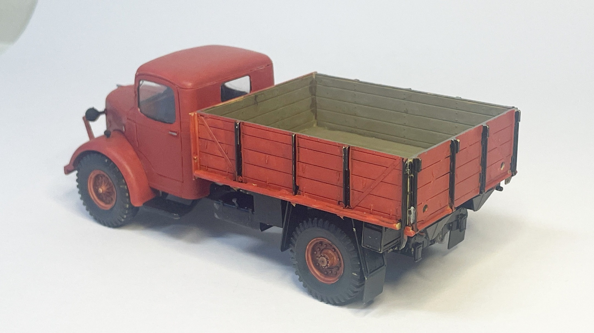

Auto e veicoli stradali · scale model archive
Austin CWT 3 tons
Austin CWT 3 tons — Kit: Airfix, Scale: 1/35. This is the lorry used by the Donati company from 1946 through the early 1970s. It was purchased near…

Photo gallery

English description
This is the lorry used by the Donati company from 1946 through the early 1970s. It was purchased near Rovigo from a war surplus depot and used to deliver beer and soft drinks to bars scattered across the Ferrara countryside. As such it was the most important lorry of the company. The driver was Stabellini Ermes, known to everyone as “Vampa.” He was missing part of his middle finger—lost to a radiator fan while working on an engine. As a child, I couldn’t take my eyes off his hand; it fascinated and unsettled me in equal measure.
Descrizione italiana
Questo è il camion utilizzato dalla ditta Donati dal 1946 fino ai primi anni Settanta. Fu acquistato nei pressi di Rovigo da un deposito di residuati bellici e impiegato per consegnare birra e bibite ai bar sparsi nella campagna ferrarese. Per questo fu il camion più importante dell’azienda. L’autista era Stabellini Ermes, conosciuto da tutti come “Vampa”. Gli mancava una parte del dito medio, persa nella ventola di un radiatore mentre lavorava su un motore. Da bambino non riuscivo a staccare gli occhi da quella mano: mi affascinava e mi inquietava allo stesso tempo.